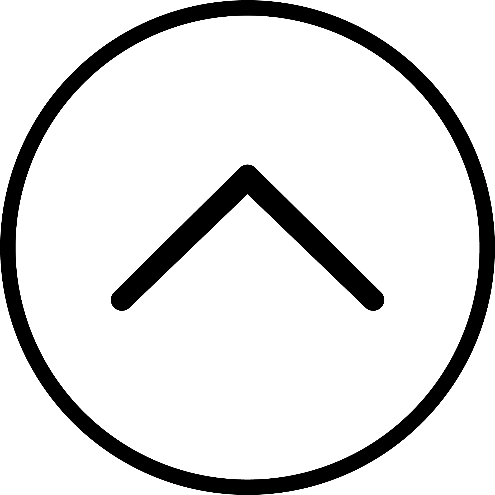

sup girl
My name is Andrea. I'm a UI/UX designer in Brisbane. I'm in my last semester of a Multimedia Design degree at The University of Queensland. I specialize in user interfaces and user experience design, branding, and front-end development.
Illustrator, InDesign, Photoshop, HTML5, CSS3, Sass, JavaScript, JQuery, JavaFX (not that great at Java), sewing, embroidery, ...
Currently learning Angular.js and Gulp.js
Check out my actual portfolio here.
Chuck me an email.
Or you could say hi to me on:
Back to the top!
SpandX is a new and visual way of teaching the basic concept of the heliocentric model in which the earth and all other planets revolve around the sun. This digital solar system is projected onto the spandex surface so the user can watch any changes that happen when they interact with it. When a user pushes down on the spandex surface, the Kinect senses how hard the user is pushing and translates that by increasing the mass of the sun which also increases its speed and gravity.
Over the semester, we’ve developed a simulated solar system through Unity that can be manipulated. We combined that with a Kinect sensor, projector, and a table with a stretchy spandex surface to create a learning tool that allows for kinesthetic and visual learning.
SpandX is a new and visual way of teaching the basic concept of the heliocentric model in which the earth and all other planets revolve around the sun. This digital solar system is projected onto the spandex surface so the user can watch any changes that happen when they interact with it. When a user pushes down on the spandex surface, the Kinect senses how hard the user is pushing and translates that by increasing the mass of the sun which also increases its speed and gravity.
Over the semester, we’ve developed a simulated solar system through Unity that can be manipulated. We combined that with a Kinect sensor, projector, and a table with a stretchy spandex surface to create a learning tool that allows for kinesthetic and visual learning.
Over the semester, we’ve developed a simulated solar system through Unity that can be manipulated. We combined that with a Kinect sensor, projector, and a table with a stretchy spandex surface to create a learning tool that allows for kinesthetic and visual learning.